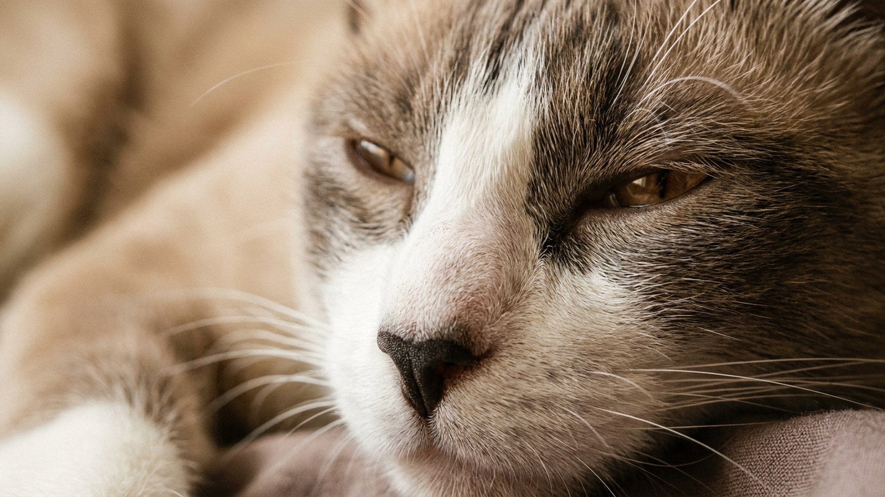

Вы уходите в ванную — кошка за вами. Открываете ноутбук — она рядом. Ложитесь спать — устраивается на плече. Сноу-шу — порода с собачьей логикой: один хозяин, полная преданность, минимум дистанции. Это не удобно всем. Ниже — характер, особенности окраса и честный ответ, кому эта кошка подойдёт, а кому создаст проблемы.
🐾 Всё о вашем питомце — в одном приложении
AI-ветеринар, дневник, напоминания о прививках и уходе. Установите AnimaLife — это бесплатно, в Telegram и MAX.
Сноу-шу — результат скрещивания сиамской кошки и американской короткошёрстной. Порода появилась в 1960-х в США и до сих пор остаётся редкой: разведение сложно, потому что рисунок не наследуется предсказуемо. Стандарт требует белых «носочков» на лапах и тёмной маски на мордочке — но точная форма пятен, их распределение и интенсивность у каждого котёнка уникальны. Двух одинаковых сноу-шу не бывает физически.
Это важно знать при выборе: если вы ищете кошку «как на фотографии», придётся ждать подходящего помёта. Добросовестные заводчики не обещают точный узор заранее.
Сноу-шу выбирает одного члена семьи и следует за ним повсюду. Это не тревожность — это порода. Кошка физически некомфортно переносит длительное отсутствие «своего» человека: может громко звать, искать, беспокоиться. Если хозяин часто в командировках или работает на 10-часовых сменах — сноу-шу будет страдать.
Одна из неожиданных черт породы — любовь к воде. Многие сноу-шу намеренно касаются лапой воды в миске, играют под краном или садятся рядом с ванной. Это не отклонение — наследие от американской короткошёрстной.
Интеллект у породы высокий: скучающая сноу-шу начинает придумывать себе развлечения самостоятельно — не всегда те, что понравятся хозяину. Головоломки-кормушки, обучение трюкам, игры с охотничьим инстинктом — всё это снижает нагрузку на мебель и шторы.
Шерсть короткая, плотная, почти не требует расчёсывания. Достаточно раз в неделю пройтись резиновой щёткой — особенно в период линьки весной и осенью. Купать нужно редко, только по необходимости. Когти, уши, зубы — в стандартном режиме, как у любой домашней кошки. По вопросам питания и профилактики обратитесь к ветеринару: рекомендации зависят от возраста, веса и образа жизни конкретной кошки.
🐾 Спросите AI-ветеринара прямо сейчас
AnimaLife — приложение, где AI-ветеринар отвечает на вопросы о кошке или собаке 24/7. Бесплатно, без записи и очередей.
🐾 Понравился разбор?
Подпишитесь на канал — каждый день разбираем по одному тревожному симптому у кошек и собак: что в пределах нормы, а когда пора к врачу. Подпишитесь, чтобы не пропустить разбор, который может спасти здоровье вашего питомца.
Сноу-шу подходит тем, кто хочет кошку с настоящей эмоциональной связью — не украшение квартиры, а живой компаньон. Не подходит людям, которые много отсутствуют дома и не готовы завести второго питомца. Порода редкая, щенков мало — перед поиском стоит убедиться, что именно такой темперамент вам нужен.
Материал носит информационный характер и не заменяет очную консультацию ветеринара.